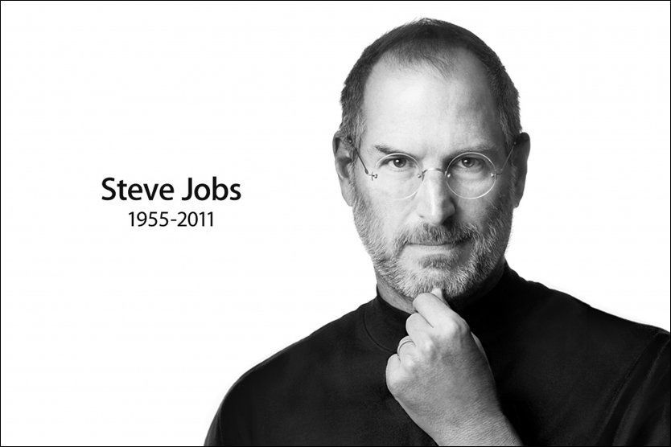

Eksempelside for Microdata - Person

Steve Jobs
Steve Jobs(født i San Francisco i USA, død ) var en av grunnleggerne av Apple.
Hans biologiske far Abdul Fattah Jandali kom opprinnelig fra Homs i Syria. Han ble adoptert etter fødselen, og vokste opp i California. Hans biologiske søster er forfatteren Mona Simpson.